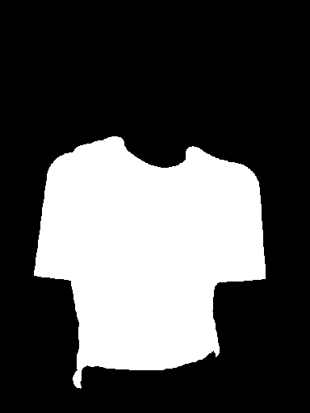

different-person-anchored: rejected: shoulder silhouette and compositing mismatch
Raw output has two sleeves and a recognizable black graphic shirt, unlike the prior sleeveless result. The generated shoulders narrow relative to the original body. Final compositing preserves exposed skin caps and introduces bright wedges at the shoulders. This is not acceptable. The new body-shape guard rejects substantial generated-background intrusion into original upper-arm skin, instead of erasing skin to hide the defect.


